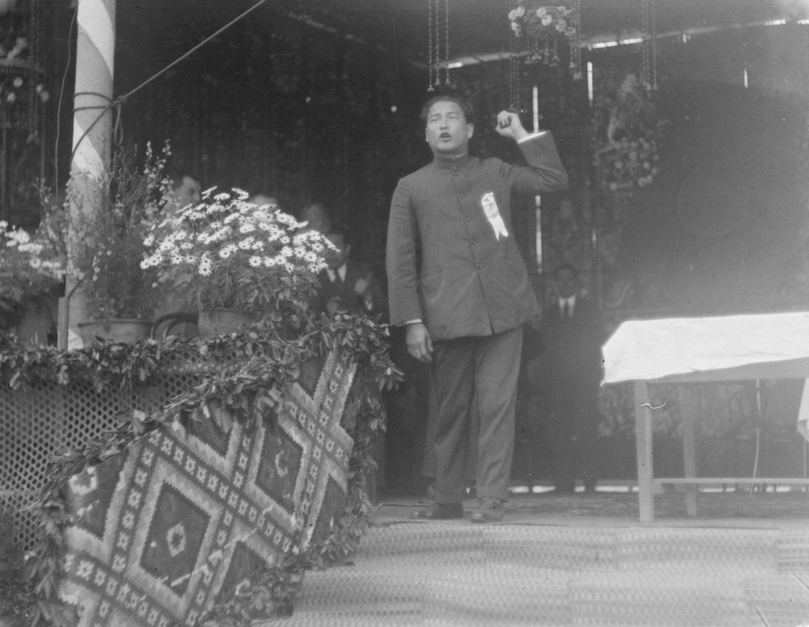

中国，1927
七一五反革命政变（1927 年武汉）
1927 年 7 月 15 日武汉国民党中央作出「分共」决定之后，接下来四个月里武汉发生了什么？同一件事为什么会有三种互相矛盾的记载？
汪精卫，1926 年 1 月摄于广州（摄影符聘昌，香港大学档案数字化藏品编号 Fu-n127，Wikimedia Commons，公有领域）。人物肖像，拍摄早于七一五约一年半，不是 1927 年 7 月 15 日的现场影像。图像出处与许可

1927 年 7 月 15 日武汉国民党中央作出「分共」决定之后，接下来四个月里武汉发生了什么？同一件事为什么会有三种互相矛盾的记载？